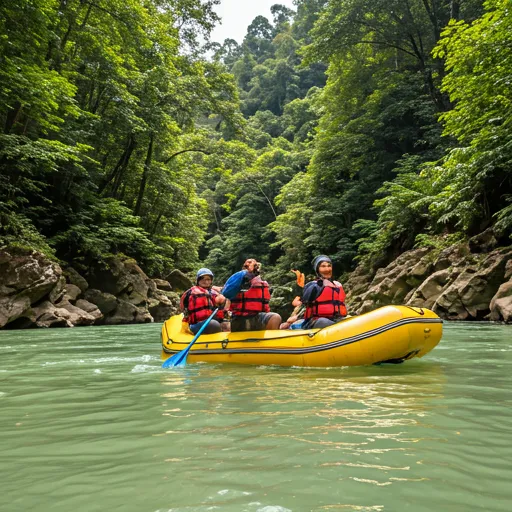
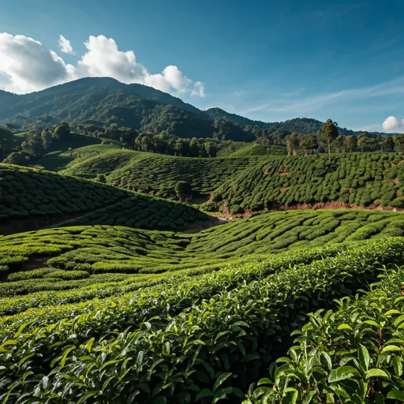

Paket Family Gathering Seru di Batu Malang: Panduan Lengkap Memilih Vendor Outbound Terpercaya

Suasana family gathering seru di kawasan wisata alam Batu, Malang dengan pemandangan pegunungan.
Daftar Isi
Mencari paket family gathering di Batu Malang yang seru dan berkesan? Anda berada di tempat yang tepat. Kota Batu, yang terletak di dataran tinggi Malang, Jawa Timur, telah lama dikenal sebagai destinasi favorit untuk kegiatan outdoor termasuk family gathering. Dengan udara sejuk, pemandangan alam yang memukau, dan berbagai fasilitas outbound lengkap, Batu Malang menjadi pilihan utama keluarga Indonesia untuk menghabiskan waktu berkualitas bersama.
Sebagai vendor outbound Batu Malang terpercaya, Gemilang Katun Outbound telah berpengalaman menangani ratusan acara family gathering dengan tingkat kepuasan peserta yang sangat tinggi. Dalam artikel ini, kami akan membagikan panduan lengkap untuk memilih paket family gathering yang tepat, termasuk tips, lokasi terbaik, dan aktivitas yang bisa Anda nikmati bersama keluarga.
Mengapa Family Gathering di Batu Malang Sangat Diminati?
Batu Malang menawarkan kombinasi sempurna antara keindahan alam dan fasilitas modern. Berada di ketinggian 700-1.700 meter di atas permukaan laut, kota ini memiliki suhu rata-rata 18-25°C yang sangat nyaman untuk aktivitas outdoor sepanjang hari. Tidak heran jika banyak keluarga memilih Batu sebagai destinasi family gathering mereka.
Selain itu, aksesibilitas Batu Malang sangat baik. Hanya berjarak sekitar 20 km dari pusat Kota Malang dan sekitar 100 km dari Surabaya, membuatnya mudah dijangkau dari berbagai kota di Jawa Timur. Infrastruktur jalan yang baik juga memastikan perjalanan menuju lokasi gathering berjalan lancar dan nyaman bagi seluruh anggota keluarga.
Keunggulan Batu Malang untuk Gathering Keluarga
Alam yang Asri dan Sejuk
Kawasan Batu dikelilingi oleh pegunungan dengan hutan pinus yang rimbun, air terjun tersembunyi, dan hamparan kebun apel yang menawan. Suasana alam seperti ini memberikan efek relaksasi alami bagi peserta gathering, membuat mereka lebih terbuka untuk berinteraksi dan membangun kebersamaan.
Fasilitas Outbound Lengkap
Batu Malang memiliki beragam venue outbound dengan fasilitas lengkap mulai dari flying fox, high rope, paintball, hingga area camping yang memadai. Vendor outbound terpercaya seperti Gemilang Katun menyediakan peralatan yang terawat dengan standar keamanan tinggi.
"Family gathering bukan sekadar berkumpul, tapi tentang membangun kenangan indah yang akan diingat setiap anggota keluarga seumur hidup. Batu Malang memberikan latar sempurna untuk momen berharga tersebut." — Tim Gemilang Katun Outbound
Kuliner Khas yang Menggugah Selera
Tidak lengkap rasanya gathering tanpa menikmati kuliner lokal. Batu Malang terkenal dengan jagung bakar, sate kelinci, bakso Malang, dan berbagai olahan apel segar. Paket gathering biasanya sudah termasuk konsumsi dengan menu pilihan yang lezat dan bergizi.

Peserta family gathering menikmati aktivitas outdoor di kawasan hijau Batu Malang.
Jenis Paket Family Gathering yang Tersedia
Paket Hemat (Budget Friendly)
Paket ini cocok untuk keluarga dengan anggaran terbatas namun tetap ingin mendapatkan pengalaman gathering yang menyenangkan. Biasanya mencakup 3-4 permainan outbound ringan, makan siang sederhana, dan fasilitator dasar. Harga mulai dari Rp150.000 per orang.
Paket Standar (Best Value)
Paket paling populer yang mencakup 5-7 aktivitas outbound termasuk games kompetisi antar keluarga, makan siang dan snack, dokumentasi foto, serta fasilitator profesional. Harga mulai dari Rp250.000 per orang dan merupakan pilihan terbaik untuk nilai yang didapatkan.
Paket Premium (All Inclusive)
Bagi yang menginginkan pengalaman terbaik, paket premium menyediakan aktivitas lengkap termasuk flying fox, paintball, camping, BBQ dinner, live music, dan dokumentasi video profesional. Harga mulai dari Rp500.000 per orang dengan fasilitas VIP.
Tips Memilih Vendor Outbound Batu Malang Terpercaya
Memilih vendor outbound Batu Malang terpercaya adalah langkah krusial untuk kesuksesan acara family gathering Anda. Berikut beberapa tips yang perlu diperhatikan:
1. Cek Portofolio dan Testimoni — Vendor yang berpengalaman pasti memiliki dokumentasi acara sebelumnya. Minta portfolio dan baca testimoni dari klien sebelumnya untuk memastikan kualitas layanan.
2. Pastikan Standar Keamanan — Keamanan adalah prioritas utama. Pastikan vendor memiliki peralatan safety yang memadai, tim P3K terlatih, dan asuransi kecelakaan untuk peserta.
3. Fleksibilitas Program — Vendor terpercaya mampu menyesuaikan program sesuai kebutuhan dan usia peserta. Gathering keluarga berbeda dengan corporate gathering, sehingga program harus disesuaikan.
4. Transparansi Harga — Pastikan tidak ada biaya tersembunyi. Vendor yang baik akan memberikan rincian harga yang jelas dan detail mengenai apa saja yang termasuk dalam paket.
Aktivitas Seru dalam Family Gathering di Batu Malang
Berbagai aktivitas seru yang bisa dinikmati selama family gathering di Batu Malang antara lain:
Outbound Games — Permainan kelompok yang dirancang untuk membangun kekompakan keluarga seperti estafet, tarik tambang, dan lomba balap karung yang cocok untuk semua usia.
Nature Walk & Trekking — Menjelajahi jalur-jalur trekking yang indah di sekitar kawasan Batu sambil menikmati keindahan flora dan fauna lokal bersama keluarga.
Fun Cooking — Lomba memasak antar keluarga menggunakan bahan-bahan lokal segar. Aktivitas ini sangat mengasyikkan dan menghasilkan momen kebersamaan yang tak terlupakan.
Campfire Night — Menikmati malam di sekitar api unggun dengan acara hiburan, cerita, dan BBQ bersama seluruh peserta gathering.

Panorama alam Batu Malang yang menjadi latar sempurna untuk kegiatan family gathering outdoor.
Persiapan Sebelum Family Gathering
Agar family gathering berjalan lancar, ada beberapa hal yang perlu dipersiapkan:
Pertama, tentukan jumlah peserta secara akurat agar vendor bisa mempersiapkan fasilitas yang memadai. Kedua, pilih waktu yang tepat — bulan April hingga Oktober merupakan waktu terbaik karena cuaca cenderung cerah. Ketiga, komunikasikan kebutuhan khusus kepada vendor seperti peserta lansia, anak-anak balita, atau peserta berkebutuhan khusus.
Jangan lupa untuk menyiapkan pakaian yang nyaman untuk aktivitas outdoor, sepatu yang tepat, sunscreen, dan topi. Bawa juga obat-obatan pribadi dan pastikan kondisi kesehatan seluruh peserta dalam keadaan baik sebelum mengikuti aktivitas outbound.
Baca Juga
Pertanyaan yang Sering Diajukan (FAQ)
Berapa harga paket family gathering di Batu Malang?
Harga paket family gathering di Batu Malang bervariasi mulai dari Rp150.000 hingga Rp500.000 per orang, tergantung fasilitas, jumlah peserta, dan jenis paket yang dipilih. Semakin besar jumlah peserta, biasanya semakin terjangkau harga per orangnya.
Apa saja yang termasuk dalam paket family gathering?
Paket biasanya mencakup permainan outbound, makan siang, snack, fasilitator profesional, peralatan keamanan, P3K, serta dokumentasi kegiatan berupa foto dan video.
Kapan waktu terbaik untuk family gathering di Batu?
Waktu terbaik adalah bulan April-Oktober saat musim kering, dengan suhu sejuk antara 18-25°C yang ideal untuk aktivitas outdoor. Namun Batu bisa dikunjungi sepanjang tahun.
Apakah aman untuk anak-anak dan lansia?
Ya, sangat aman. Vendor outbound terpercaya seperti Gemilang Katun menyediakan program yang disesuaikan dengan usia peserta, dilengkapi peralatan keamanan dan tim P3K profesional.
Berapa jumlah peserta minimal untuk family gathering?
Umumnya minimal peserta adalah 20-30 orang. Namun beberapa vendor juga melayani kelompok kecil mulai dari 10 orang dengan penyesuaian paket.
Kesimpulan
Memilih paket family gathering di Batu Malang dari vendor outbound terpercaya adalah keputusan tepat untuk menciptakan momen kebersamaan keluarga yang tak terlupakan. Batu Malang menawarkan keindahan alam, udara sejuk, fasilitas lengkap, dan aksesibilitas yang memudahkan seluruh anggota keluarga. Dengan perencanaan yang matang dan pemilihan vendor yang tepat, family gathering Anda dijamin akan berjalan lancar dan penuh kenangan indah.
Siap merencanakan family gathering impian Anda? Hubungi Gemilang Katun Outbound sekarang untuk konsultasi gratis!
Artikel Terkait

Keunggulan Outbound di Alam Terbuka Batu Malang
Mengapa outbound di alam terbuka Batu menjadi pilihan terbaik...
Baca Selengkapnya
Tips Memilih Vendor Outbound Batu Malang Terpercaya
Panduan cerdas memilih vendor outbound profesional...
Baca Selengkapnya